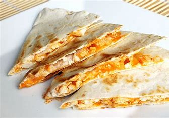

Quesadilla
Ingredients:
- Any Number of Tortillas You Want
- Cooked Chicken
- Mushrooms
- Any Shredded Cheese
Instructions:
- Cook the Chicken.
- Cook the Mushrooms
- Add Cheese,Mushrooms,Chicken, and Put Them Together with the Tortilla.
- Grab a Skillet and Butter the Pan.
- Put the Tortilla on and Fry Till Golden Brown.
Drinks:
- Water
- Strawberry Smoothie
- Sprite
- Coke